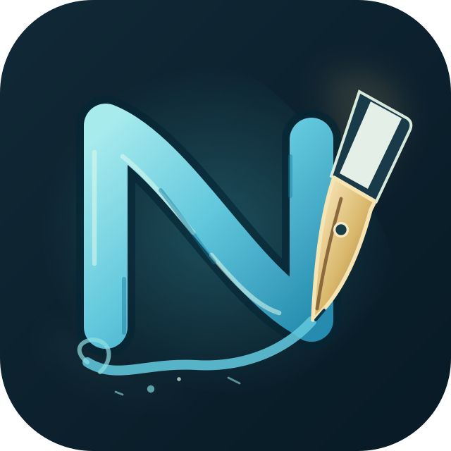
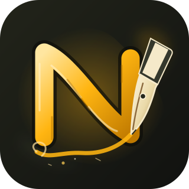
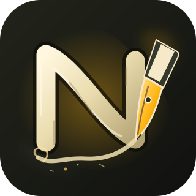

README reference
Current package logo.

The fountain nib, flowing N and ink flourish keep the README geometry. Both website options use the existing dark theme.
Current package logo.

Amber N with a warm ivory nib.

Ivory N with an amber nib.

Prepared for review. The public website keeps its current logo until you choose.